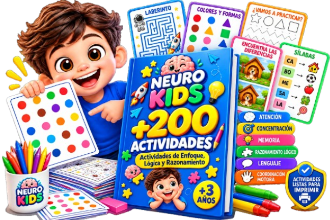
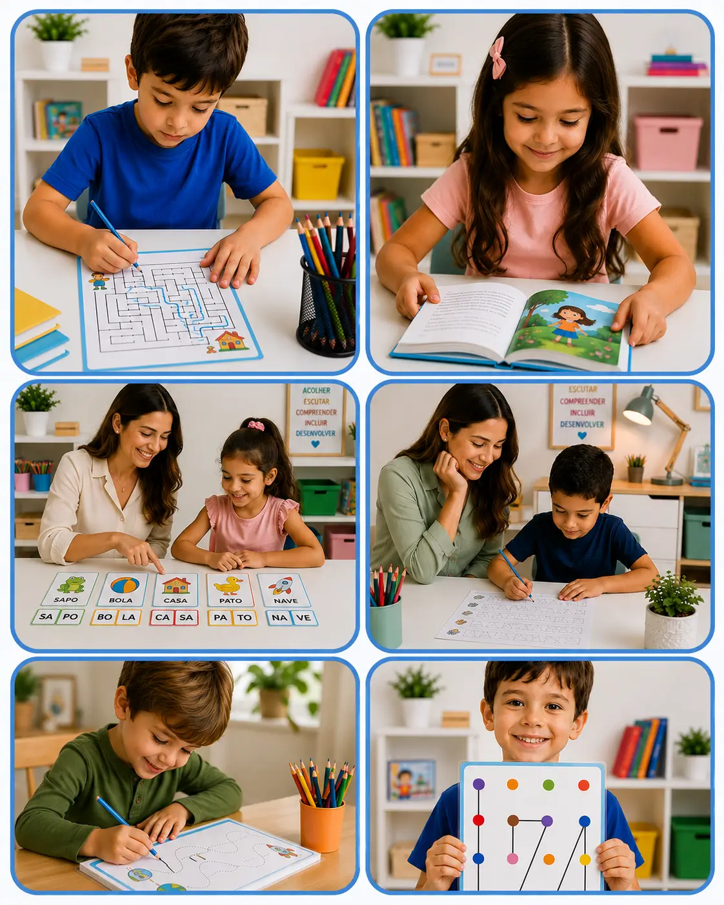
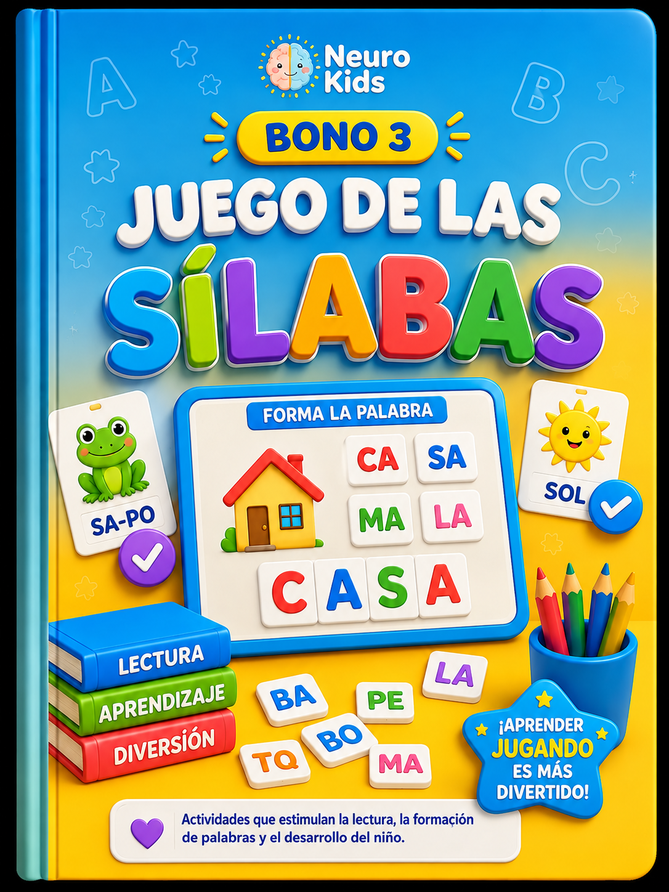
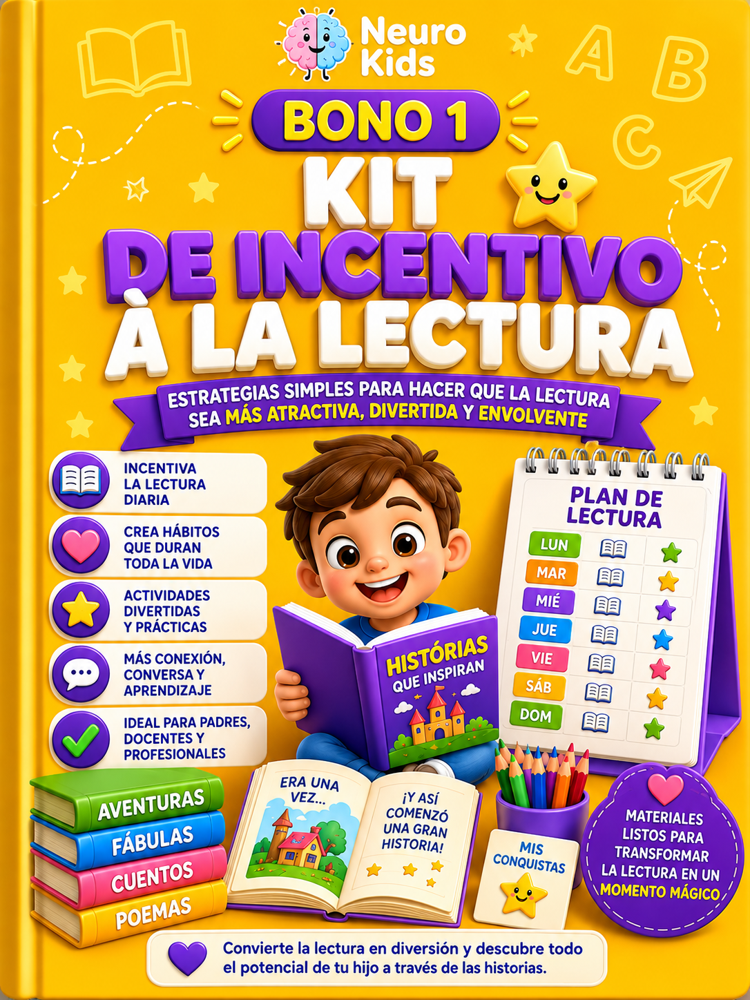
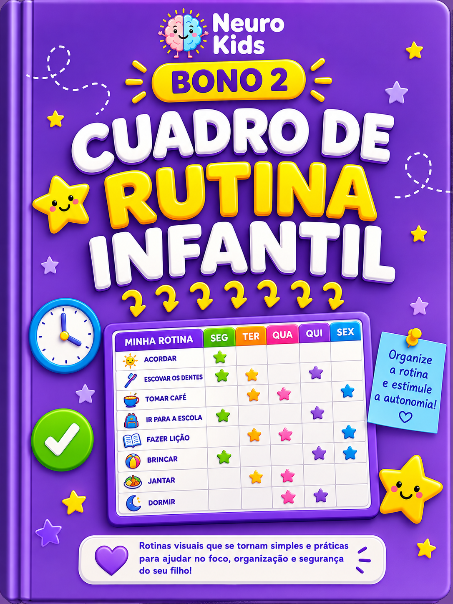

+200 ACTIVIDADES COGNITIVAS LISTAS PARA IMPRIMIR Y APLICAR
Deja de perder tiempo buscando o creando actividades antes de cada sesión. Ten un acervo completo para trabajar diferentes habilidades infantiles de forma práctica, organizada y atractiva.

🎯 ATENCIÓN Y CONCENTRACIÓN🧩 RAZONAMIENTO Y MEMORIA⚡ ACCESO INMEDIATO⚡ Acceso inmediato • 🛡️ Garantía de 7 días
QUÉ PUEDES TRABAJAR CON NEUROKIDS
No necesitas utilizar siempre las mismas actividades. Ten diferentes propuestas para elegir según el objetivo de cada sesión o momento de aprendizaje.
Concentración
Actividades para estimular el enfoque, la atención a los detalles y la permanencia en la tarea.
Atención sostenida
Ejercicios para trabajar la capacidad de mantener la atención y completar una actividad hasta el final.
Razonamiento lógico
Desafíos de secuencias, asociaciones, patrones y resolución de problemas.
Memoria de trabajo
Actividades para estimular la memoria visual, la asociación, la retención y el uso de información.
Coordinación motora y percepción visual
Propuestas para trabajar la coordinación motora fina, la percepción visual, los trazos y habilidades importantes para el aprendizaje.
Lenguaje y alfabetización
Actividades para estimular la conciencia fonológica, la formación de palabras, la lectura y la ampliación del vocabulario.
DEJA DE BUSCAR ACTIVIDADES A ÚLTIMA HORA
¿Cuántas veces has tenido que preparar una sesión y terminaste buscando en internet una actividad que realmente se ajustara a lo que necesitabas trabajar?
Con NeuroKids, tienes +200 actividades reunidas en una sola biblioteca para elegir, imprimir y aplicar.
En lugar de empezar desde cero, ya tienes un acervo listo para consultar cada vez que necesites una nueva propuesta.
Laberintos progresivos
Desafíos para trabajar el enfoque, la planificación, la atención y la coordinación motora.
Juegos de alfabetización
Actividades para conciencia fonológica, formación de palabras, lectura y vocabulario.
Exercícios de Concentración
Propuestas para estimular la concentración, la percepción visual y la atención a los detalles.
Desafíos de memoria
Actividades para trabajar la memoria visual, la asociación y la retención de información.
Razonamiento lógico
Secuencias, patrones y desafíos para estimular el pensamiento lógico y la resolución de problemas.
Coordinación motora fina
Trazos y actividades para trabajar la coordinación motora fina y habilidades relacionadas con la escritura.
Actividades lúdicas e ilustradas
Materiales visualmente atractivos para hacer la aplicación más dinámica y mantener al niño involucrado.
Todo en PDF, listo para imprimir y utilizar cuando lo necesites.
🧠 +10 MIL NIÑOS YA HAN ACCEDIDO A LAS ACTIVIDADES NEUROKIDS
Profesionales y educadores ya utilizan las actividades de NeuroKids para diversificar propuestas de atención, aprendizaje y estimulación infantil.
Ahora imagina tener este acervo disponible cada vez que un niño llegue a tu sesión. Identificas lo que necesitas trabajar, eliges una actividad, la imprimes y la aplicas. Sin tener que crear todo desde cero.

PROFESIONALES ESTÁN UTILIZANDO NEUROKIDS EN LA PRÁCTICA
Mira lo que comentan sobre el material los profesionales que trabajan con niños.
← desliza hacia un lado para ver más →
TU NUEVO ACERVO DE ACTIVIDADES PROFESIONALES
Neuro Kids — +200 Actividades en PDF
+200 actividades listas para imprimir y aplicar en sesiones, clases y momentos de estimulación infantil.
Un acervo práctico para tener diferentes opciones de actividades cada vez que necesites trabajar una habilidad específica.
VALORADO EN $97.90

Juego de las sílabas
Material complementario con actividades prácticas para trabajar la conciencia fonológica, la formación de palabras y la lectura.
VALORADO EN $37.90— HOY GRATIS

Kit de incentivo a la lectura
Actividades y estrategias para hacer más atractivos los momentos de lectura y estimular la participación de los niños.
VALORADO EN $27.90— HOY GRATIS

Tabla de rutina infantil
Rutina visual lista para imprimir que ayuda a organizar las actividades y facilita la adaptación del niño a la rutina.
VALORADO EN $25.99— HOY GRATIS
💰 VALOR TOTAL DE LOS BONOS: $95.70
HOY RECIBES LA BIBLIOTECA COMPLETA + LOS 3 BONOS POR SOLO $5.99
⏰ La oferta termina en 00:15:00

🛡️ TIENES 7 DÍAS PARA PROBAR
Puedes acceder y conocer el material con tranquilidad. Si por cualquier motivo decides que NeuroKids no es para ti, solo tienes que solicitar el reembolso dentro de 7 días. Recibes el 100 % de tu dinero de vuelta.
YA NO NECESITAS EMPEZAR CADA SESIÓN DESDE CERO
Ten un acervo con +200 actividades listas para imprimir y aplicar, además de 3 materiales adicionales para ampliar aún más tus posibilidades.
🎁 Oferta con los 3 bonos + precio promocional válida hasta que termine este contador
Termina en
por solo
68% DE DESCUENTO
Ahorras $32.10 hoy.
en un solo pago con tarjeta
Precio mostrado en tu moneda local.
POR SOLO $5.99, TEN UN ACERVO CON +200 ACTIVIDADES A TU DISPOSICIÓN.
- ✓Biblioteca NeuroKids con +200 actividades profesionales
- ✓Atención y concentración
- ✓Memoria y percepción visual
- ✓Razonamiento lógico y secuencias
- ✓Coordinación motora
- ✓Alfabetización y conciencia fonológica
- ✓Lenguaje, lectura e interpretación
- ✓Laberintos, juegos y desafíos educativos
- ✓Actividades ilustradas y listas para imprimir
- ✓Acesso imediato
- ✓🎁 Juego de las sílabas
- ✓🎁 Kit de incentivo a la lectura
- ✓🎁 Tabla de rutina infantil
🔒 Compra 100 % segura y cifrada
Preguntas frecuentes
¿Las actividades tienen diferentes niveles de dificultad?▼
Sí. La Biblioteca NeuroKids reúne actividades con diferentes niveles de dificultad, lo que permite acompañar la evolución del niño de forma gradual. Puedes elegir los ejercicios según la edad, el desarrollo y los objetivos de cada sesión, clase o actividad en casa.
¿Puedo utilizarla en el consultorio?▼
Sí. La Biblioteca NeuroKids fue desarrollada para ser utilizada por psicopedagogos, psicólogos, fonoaudiólogos, terapeutas ocupacionales, neuropsicólogos, profesores y otros profesionales que trabajan con el desarrollo infantil. Las actividades están listas para imprimir y aplicar.
¿Puedo utilizarla en el aula?▼
Sí. El material puede utilizarse en el aula, apoyo escolar, educación infantil, alfabetización y sesiones individuales o grupales. Son actividades prácticas que hacen las clases más dinámicas y atractivas.
¿Puedo imprimir las actividades tantas veces como quiera?▼
Sí. Después de adquirir la Biblioteca NeuroKids, podrás imprimir las actividades cada vez que las necesites para utilizarlas durante tus sesiones, clases o con tus hijos.
¿Sirve para niños con dificultades de aprendizaje?▼
Sí. Las actividades estimulan habilidades importantes como atención, concentración, memoria, lenguaje, percepción visual, coordinación motora y razonamiento lógico. Pueden utilizarse como recurso complementario por familias y profesionales que acompañan a niños con dificultades de aprendizaje o necesidades específicas.
¿Cómo recibo el acceso?▼
Después de confirmar el pago, se abrirá automáticamente una página con tu acceso para descargar el material de inmediato. También recibirás un correo electrónico con el enlace de acceso, para que puedas descargar el material cuando lo necesites.
¿Necesito pagar una mensualidad?▼
No. El pago es único. Compras una sola vez y recibes acceso inmediato a la Biblioteca NeuroKids y a los bonos incluidos, sin mensualidades ni cargos recurrentes.